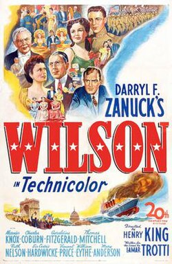

Wilson
17th Academy Awards
(Oscars 1945)
10 Nominations, 5 Awards
| Nominations | ||
|---|---|---|
| Category | Nominees | Result |
| Best Motion Picture | 20th Century-Fox | Nominated |
| Actor | Alexander Knox | Nominated |
| Directing | Henry King | Nominated |
| Writing (Original Screenplay) | Lamar Trotti | Won |
| Cinematography (Color) | Leon Shamroy | Won |
| Film Editing | Barbara McLean | Won |
| Art Direction (Color) | Thomas Little and Wiard Ihnen | Won |
| Special Effects | Fred Sersen and Roger Heman | Nominated |
| Sound Recording | E. H. Hansen | Won |
| Music (Music Score of a Dramatic or Comedy Picture) | Alfred Newman | Nominated |